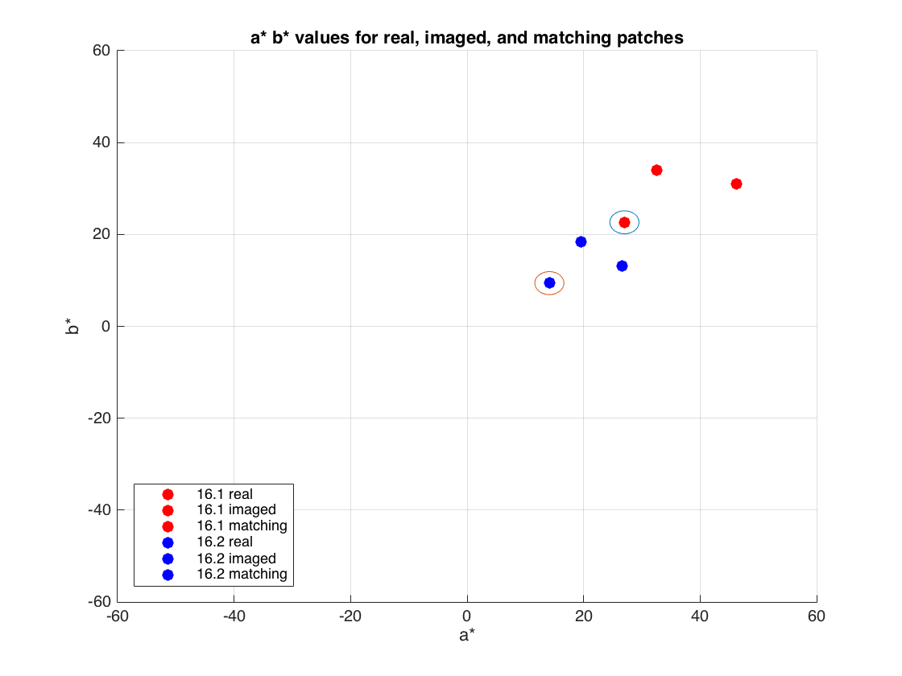

colorChecker = importdata('ColorChecker_380-780-5nm.txt');
metaChecker = importdata('MetaChecker_380-780-5nm.txt');
cie = loadCIEData();
colorCheckerD65XYZs = ref2XYZ(colorChecker, cie.cmf2deg, cie.illD65);
colorCheckerAXYZs = ref2XYZ(colorChecker, cie.cmf2deg, cie.illA);
metaCheckerD65XYZs = ref2XYZ(metaChecker, cie.cmf2deg, cie.illD65);
metaCheckerAXYZs = ref2XYZ(metaChecker, cie.cmf2deg, cie.illA);
XYZn_D65 = ref2XYZ(cie.illE,cie.cmf2deg,cie.illD65);
XYZn_A = ref2XYZ(cie.illE,cie.cmf2deg,cie.illA);
colorCheckerD65LABs = XYZ2Lab(colorCheckerD65XYZs, XYZn_D65);
colorCheckerALABs = XYZ2Lab(colorCheckerAXYZs, XYZn_A);
metaCheckerD65LABs = XYZ2Lab(metaCheckerD65XYZs, XYZn_D65);
metaCheckerALABs = XYZ2Lab(metaCheckerAXYZs, XYZn_A);
deltaALab = deltaEab(colorCheckerALABs, metaCheckerALABs);
deltaD65Lab = deltaEab(colorCheckerD65LABs, metaCheckerD65LABs);
res = [ 1:1:24; deltaD65Lab(2:25); deltaALab(2:25);];
fprintf('Patch #\tDELab D65\tDEab illA\n')
fprintf(1, [repmat('%d\t %2.4d\t %2.3f\n', 1, 25) '\n'], res);
patchXYZs = calcColorMunkiXYZs();
XYZn_D50 = ref2XYZ(cie.illE,cie.cmf2deg,cie.illD50);
patchLABs = XYZ2Lab(patchXYZs, XYZn_D50);
real161imaged = deltaEab(patchLABs(:,1), patchLABs(:,2));
real161matching = deltaEab(patchLABs(:,1), patchLABs(:,3));
real162imaged = deltaEab(patchLABs(:,4), patchLABs(:,5));
real162matching = deltaEab(patchLABs(:,4), patchLABs(:,6));
clf;
hold on
plot(patchLABs(2,1), patchLABs(3,1), 'r.', 'MarkerSize',25);
plot(patchLABs(2,2), patchLABs(3,2), 'r.', 'MarkerSize',25);
plot(patchLABs(2,3), patchLABs(3,3), 'r.', 'MarkerSize',25);
plot(patchLABs(2,4), patchLABs(3,4), 'b.', 'MarkerSize',25);
plot(patchLABs(2,5), patchLABs(3,5), 'b.', 'MarkerSize',25);
plot(patchLABs(2,6), patchLABs(3,6), 'b.', 'MarkerSize',25);
axis([-60,60,-60,60]);
title('a* b* values for real, imaged, and matching patches');
legend('16.1 real', '16.1 imaged', '16.1 matching',...
'16.2 real', '16.2 imaged', '16.2 matching','Location','southwest');
xlabel('a*');
ylabel('b*');
grid on;
circle(patchLABs(2,1), patchLABs(3,1), 2.5);
circle(patchLABs(2,4), patchLABs(3,4), 2.5);
hold off;
Patch # DELab D65 DEab illA
1 2.5974e-07 22.636
2 1.1361e-07 22.178
3 1.0559e-07 32.275
4 1.9045e-07 28.232
5 3.9798e-07 25.937
6 1.3263e-07 29.487
7 8.5812e-08 17.309
8 1.4537e-07 27.241
9 1.6652e-07 12.210
10 2.9074e-07 19.509
11 1.5608e-07 22.623
12 1.3047e-07 16.970
13 1.0833e-07 20.083
14 1.1933e-07 26.099
15 6.7078e-08 7.053
16 1.3297e-07 11.532
17 6.4681e-09 10.690
18 8.5813e-08 31.619
19 2.6606e-07 2.545
20 6.9477e-08 15.940
21 1.8463e-07 28.926
22 8.3373e-08 26.751
23 3.6676e-07 20.574
24 1.0221e-07 18.567
